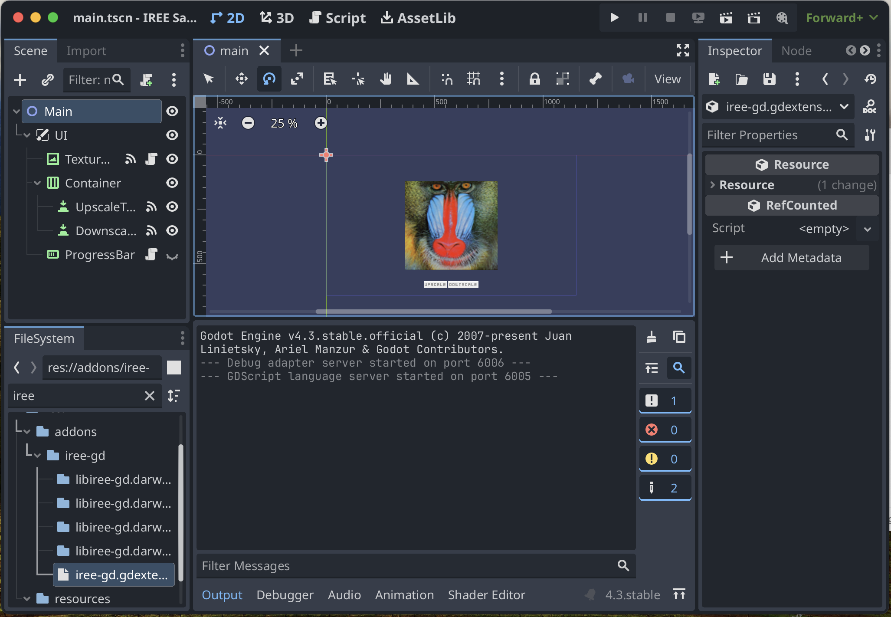

Tensorflow Lite with IREE.gd
It's time to start spicing up your game with machine-learning models!
- Before we start, we will first set up IREE.gd in a project.
- Then, we covered some concepts so people could grasp what was happening while following the tutorial.
- Lastly, we demonstrate using a machine-learning model in Godot via IREE.gd.
In this document, we will be focus on porting machine-learning models from Tensorflow Lite machine-learning framework.
Getting started
To get IREE.gd, go to the official releases on Github and fetch a copy of IREE.gd. There are two versions:
iree-gd-sample-*.zip- A Godot project with IREE.gd and several samples to test it out, good for trying out.iree-gd-*.zip- A lightweight add-on comprising the compiled libraries suitable for integration into an existing project.
In this documentation, we will use iree-gd-sample-*.zip to quickly set up and test whether IREE.gd is working correctly.
Testing out the samples
Before you start, it would be better for you to test whether your IREE.gd is working on your device.
After downloading and extracting the aforementioned iree-gd-sample-*.zip, open the project with Godot.
I hope you'll be greeted with a baboon face without any errors.

Just run the baboon scene.
Press the upscale button. If your baboon's face becomes much cleaner visually, congratulations—you have successfully run the Enhanced Super Resolution GAN model!
Later, we will discuss how the TensorFlow lite model is imported into Godot.
How IREE.gd works
This section discusses technical details so you have a clearer image of what happens when you import your model, hopefully in simpler terms. Some of the details are abstracted away to make things simpler. For further reading, you can visit the official IREE website. It is not mandatory, and you could skip this section for now.
IREE.gd, as the name suggested, is IREE ported into Godot. IREE is a compiler and runtime library specialized for running machine learning models. It is like the Java compiler and Java virtual machine; the compiler produces bytecodes while the runtime runs the bytecodes. The language would be Java for the Java compiler, while for IREE, the language is MLIR, a language specialized for the compiler to read instead of being user-friendly.
For the runtime, instead of having something like System.out.println in Java to interact with the user, the IREE runtime is specialized for interacting with the CPU or GPU and making crazy fast accelerated linear algebra (which most machine learning models need).
To use a machine learning model with IREE, one would need to turn or transpile the model into MLIR code that uses a library (CPU or GPU functions) supported by the runtime. The library supported by the runtime depends on the application for IREE.gd, there is Metal for Apple products, Vulkan for Windows, Unix-like and Android, and VMVX for the rest. So, later on, you'll need to make your model target the platform your game will be on (having both Metal and Vulkan will support most of the platforms). For turning the model into MLIR code, there are different tools for different machine learning frameworks, as each has its format for storing the machine learning model too bad there is no standardized format for it. Thus, each machine-learning framework has different ways of porting the models.
After successfully generating the bytecodes, we must figure out the input and output formats. In IREE, the input data is in a tensor or multi-dimensional array. The input and output dimensions would depend on the model. Later, we will look over the input and output dimensions. Moreover, the user would need to figure out the meaning of the output, whether interpreted as an image or as a series of attributes. It would also heavily depend on the model. Unfortunately, there is no standard way of representing data, so one would need to figure it out, usually with the help of the original example code. In this documentation, we will do our best to demonstrate the process of figuring out the attributes.
Porting machine learning models
Porting machine learning model usually involves three steps:
- Convert the machine learning model to MLIR,
- Compile MLIR to bytecode based on the backend,
- Write interfacing code to interface with the model.
Porting Tensorflow lite model
This section will port a Tensorflow lite model called Enhanced Super Resolution GAN.
This is based on IREE's guide: Tensorflow Lite integration.
The flow follows the sequence mentioned above of steps for porting machine learning models.
Installation of IREE's tools for porting the Tensorflow lite model
IREE's tools are required to port the TensorFlow lite model. They are deployed to Python's package manager, pip.
- Install TensorFlow.
pip install "tensorflow<=2.18.0"
- Install IREE's tools
pip install \
"iree-compiler=20240828.999" \
"iree-tools-tflite==20240226.813"
Convert Tensorflow lite model to MLIR
To convert the TensorFlow lite model into MLIR format, we'll be using iree-import-tflite.
Assuming the model to be ported as model.tflite.
iree-import-tflite model.tflite -o model.mlir
Compile Tensorflow lite MLIR to bytecode
Then, we compile the Tensorflow lite MLIR code.
Since we are compiling MLIR code generated from iree-import-tflite, we'll pass in the --iree-input-type=tosa.
We will compile for both Metal and Vulkan backends.
To target the Metal backend (Apple products), we pass in the --iree-hal-target-backends=metal-spirv flag.
iree-compile --iree-input-type=tosa --iree-hal-target-backends=metal-spirv model.mlir -o model.metal.vmfb
To target Vulkan backend (Windows, Linux, *BSD, Android), we pass in the iree-hal-target-backends=vulkan-spirv flag.
iree-compile --iree-input-type=tosa --iree-hal-target-backends=vulkan-spirv model.mlir -o model.vulkan.vmfb
The .vmfb suffix tells IREE.gd to treat it as IREE bytecode; it stands for virtual machine flat buffer.
The .metal or .vulkan in the middle of the bytecode name helps us differentiate between bytecode targeting a Metal or Vulkan backend.
Generate the bytecode information dump
Now is an excellent time to generate the information dump and inspect the bytecode to determine the input and output formats.
This step is crucial for the latter step of writing interfacing code for the machine learning model.
We will use iree-dump-module tool.
iree-dump-module model.metal.vmfb > model.metal.dump.log
iree-dump-module model.vulkan.vmfb > model.vulkan.dump.log
Inspecting the bytecode information dump
Let's inspect the bytecode information dump to find the exported functions that IREE.gd could call.
We'll only need to inspect one of the information dumps, as both would have the same exported functions, albeit with different backends.
The identifier we are looking for is the @main, the default main entry point generated by iree-compile.
After searching for the identifier, you can find it under the exported functions section.
Exported Functions:
[ 0] main(!vm.ref<?>) -> (!vm.ref<?>)
iree.abi.declaration: sync func @main(%input0: tensor<1x50x50x3xf32> {ml_program.identifier = "input_0"}) -> (%output0: tensor<1x200x200x3xf32> {ml_program.identifier = "Identity"})
[ 1] __init() -> ()
Here, the %input would be the input parameter and %output is the returned output. The tensor type after the colon (:) would be the type, or format, of the input.
The %input type is tensor<1x50x50x3xf32> while the %output type is tensor<1x200x200x3xf32>.
f32 is a 32-bit float.
So %input would be a 4th dimension 32 bit float array with the shape of [1, 50, 50, 3] while %output would be a 4th dimension 32 bit float array with the shape of [1, 200, 200, 3].
We cross-reference the input with the documentation on ESRGan website.
NOTE
- The image must be a float32 image, converted using
tf.cast(image, tf.float32).- The image must be of 4 dimensions,
[batch_size, height, width, 3]. To perform super-resolution on a single image, usetf.expand_dims(image, 0)to add the batch dimension.- To display the image, don't forget to convert back to uint8 using
tf.cast(tf.clip_by_value(image[index_of_image_to_display], 0, 255), tf.uint8)
So, we could confirm that it takes the data in 32-bit float and outputs 32-bit float data.
From the dimension specification, we know that in the shape of the input tensor, 1 is the batch size, 50 is the width and height, and 3 is probably the Red, Green, and Blue channels.
The output tensor would have the batch size as 1, the width and height as 200, and each pixel having a red, green, and blue channel.
Using the model in Godot
So, we can finally write some code to use the Tensorflow lite model.
Here is a straightforward interfacing code.
var module : IREEModule = preload("res://path/to/model.vulkan.vmfb") # Remember to use the correct bytecode following the supported backend. You can always use `OS.name` to see the current platform and infer the correct bytecode.
func upscale(p_image: Image) -> Image:
# Make sure the input image has the expected width and height.
assert(p_image.get_width() == 50) # Although it can only be 50x50, you can always slice larger images into smaller ones and pad smaller images to ensure they are 50x50.
assert(p_image.get_height() == 50)
# Ensure the image is in an RGB channel with an 8-bit unsigned integer.
p_image.convert(Image.FORMAT_RGB8)
# Get the data and convert it to 32-bit floats.
var uint8_data := p_image.get_data()
var float32_data : PackedFloat32Array
for datum in uint8_data:
float32_data.append(float(datum))
# Define the input tensor and its dimensions.
var input_tensor := IREETensor.from_float32s(float32_data, [1, 50, 50, 3])
# Call the module and get the output tensor
var output_tensors := module.call_module("module.main", [input_tensor]) # The entry point is always "module.main". It is synchronous, so it could be slow and block the main thread; you could use `Thread` to run in another thread so as not to jam the game.
if output_tensors.is_empty(): push_error("No result")
var output_tensor := output_tensors[0]
# Convert it from 32-bit floats back to the image.
var float32_output_data := output_tensor.get_data().to_float32_array()
var uint8_output_data : PackedByteArray
for datum in float32_output_data:
uint8_output_data.append(int(datum))
return Image.create_from_data(200, 200, false, Image.FORMAT_RGB8, uint8_output_data)
This code would take in a 50x50 image and output a 200x200 image.
You can use this interfacing code to make high-resolution images with ESRGan!